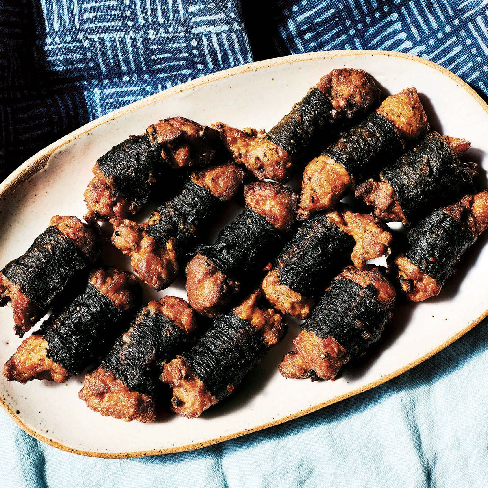

Mochiko Chicken

Nori Wrapped Mochiko Chicken
Mochiko chicken is a popular Hawaii dish marinated in a mochiko flour batter. Sweet, salty and crunchy local favorite!
Ingredients
- 2 pounds Boneless, Skinless Chicken Thighs
- 2 cups Mochiko flour
- 2 cups Sugar
- 2 cups Cornstarch
- 1 tsp Garlic Powder
- 2 eggs, beaten
- 2 cups Shoyu
- 3 to 4 sheets Nori, cut into 1 inch strips (optional)
- 1/4 cupGreen onions, chopped (optional)
- Seasame Seeds (optional)
- Neutral oil, for frying
Steps
- Rinse and dry the chicken.
- Cut chicken into 2 inch strips. Place in a bowl.
- In a seperate large bowl mix mochiko flour, sugar, cornstarch and garlic powder. Whisk until combined.
- Add in 2 eggs to dry ingredients.
- Mix in 1 cup of Shoyu until combined.
- Slowly mix in the second cup of shoyu making sure there are no clumps.
- Add in chopped green onions and seasame seeds if desired.
- Mix cut chicken into mixture.
- Cover and place in fridge for minimum 5 hours to overnight.
- Remove chicken and wrap in nori and place back into mixture 30 minutes before cooking.
- Fill a high-sided pot or dutch oven with oil to a depth of 2-3 inches over medium-low heat to 330-340 degrees.
- Add as much chicken to the pot as you can without over crowding.
- Fry the chicken for 6 to 7 minutes turning to brown evenly.
- Remove to cool for a few minutes.
- Continue until all the chicken has been fried golden brown.
- Serve with rice.